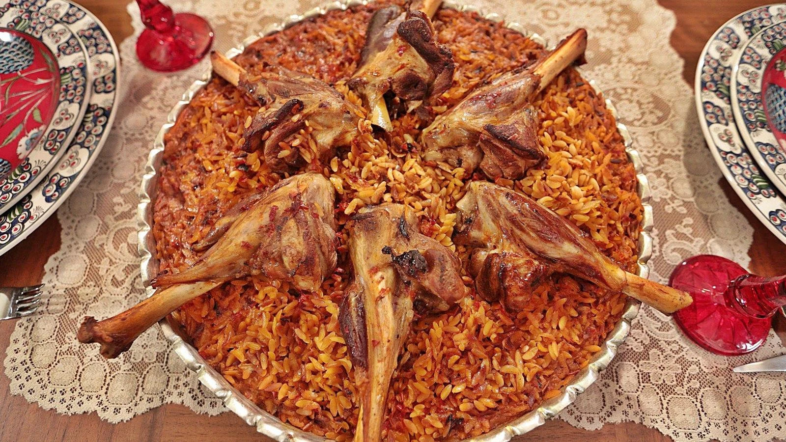

Ankara Mutfak Kültürü
Anadolu'nun Başkenti

Ankara, geleneksel Türk mutfağının en özgün tatlarına ev sahipliği yapmaktadır. Özellikle et yemekleri, mezeler ve tatlılarla zenginleşen mutfağı, Ankaralıların gurur kaynağıdır. Kendine has lezzetleriyle Ankara, gastronomi dünyasında önemli bir yere sahiptir.
- Et yemekleri ağırlıklı mutfak
- Zengin mezeler ve salatalar
- Geleneksel tatlılar
Öne Çıkan Yemekler ve Mekan Önerileri

Döner
Ankara'nın ünlü döneri, ince ince kesilmiş etlerin odun ateşinde pişirilmesiyle yapılan nefis bir lezzet.
Nerede Yenir?
- 📠Kocatepe Döner
- 📠Tandoğan Döner
- 📠Altındağ Döner Evi

Beypazarı Tatlısı
Ankara'nın Beypazarı ilçesinin meşhur tatlısı, yufka arasında ceviz ve şerbetle yapılan lezzetli bir tatlı.
Nerede Yenir?
- 📠Beypazarı Tatlıcısı
- 📠Beypazarı Yufkacısı
- 📠Tarihi Beypazarı Tatlı Evi

Ankara Tava
Özel et ve sebzelerle yapılan, Ankaralıların vazgeçilmez yemeklerinden biri.
Nerede Yenir?
- 📠Ankara Tava Salonu
- 📠Sıhhiye Et Lokantası
- 📠Keçiören Tava